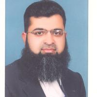

Department Of Computer Science & Information Technology
Head of CS&IT Department

Chairman of CS&IT
Introduction
The Department of Computer Science & Information Technology (CS&IT)
was established in 2001 at Mirpur as a sub-campus of University of AJ&K,
Muzaffarabad. This department has been merged into Mirpur University of Science and Technology,
Mirpur (A.K). The department offers an excellent learning environment, laboratories equipped with latest computers (all connected through Local Area Network) with internet facility, most recent books, and qualified faculty. The department developed the curricula of academic programs at various levels to meet the national and international standards as defined by Higher Education Commission. The Department offers Bachelor of Science in Computer Science (BSCS), Bachelor of Science in Information Technology (BSIT) four years’ degree programs, MS in Computer Science two years degree program and Doctor of Philosophy in Computer Science. The BSCS and BSIT degree programs are accredited by HEC,
National Computing Education Accreditation Council (NCEAC).